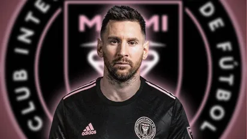

Salida de Jordi Alba en el Barcelona

Jordi Alba llegó en la temporada 2012-2013 con 23 años
Obtuvo 19 títulos jugando para la Azulgrana
| Liga de España: | 6 títulos |
| Copa del Rey: | 6 títulos |
| Supercopa de España: | 4 títulos |
| UEFA Champions League: | 1 título |
| Supercopa de la UEFA: | 1 título |
| Copa Mundial de Clubes de la FIFA: | 1 título |
Salida de Sergio Busquets en el Barcelona

Sergio Busquets llegó en la temporada 2008-2009 con 20 años
Obtuvo 36 títulos jugando para la Azulgrana
| Liga de España: | 10 títulos |
| Copa del Rey: | 7 títulos |
| Supercopa de España: | 8 títulos |
| UEFA Champions League: | 4 títulos |
| Supercopa de la UEFA: | 4 títulos |
| Copa Mundial de Clubes de la FIFA: | 3 títulos |
Operación Salida
LaLiga impone al FC Barcelona para aprobar su plan de viabilidad económica, para agilizar el traspaso de algunos, lo antes posible
Los primeros para una posible salida son los jugadores:
Ansu Fati

Ferran Torres

Franck Kessié

Futuro de Messi
Es nuevo jugador del The Herons "Inter de Miami" del ex-jugador David Beckham
Fichó por 2 temporadas
Va a recibir un salario de 40 millones de dólares por temporada
Según debutará el 21 de julio